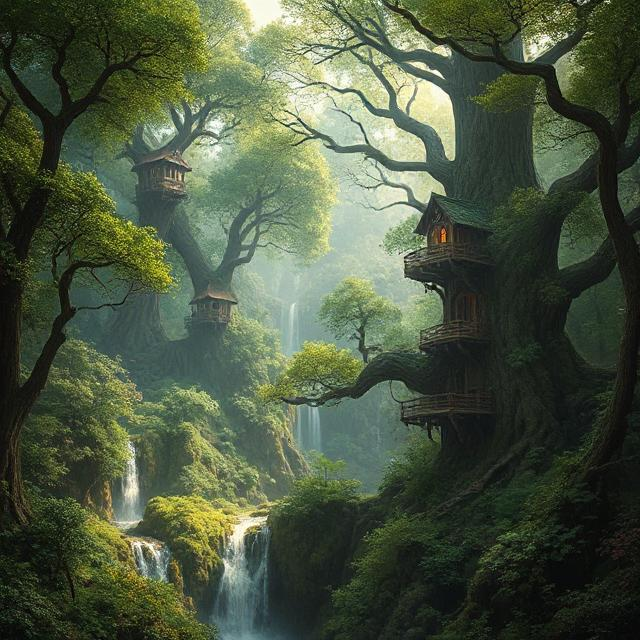

🔆 Сел'Таара — Лісовий континент

Древня територія, вкрита безкраїми чарівними лісами. Тут мешкають ельдари — народ, що володіє природною магією та мовою дерев. Повітря наповнене пахощами енергії життя, а дерева можуть спілкуватися думками. Сел'Таара — джерело гармонії та стародавніх знань.